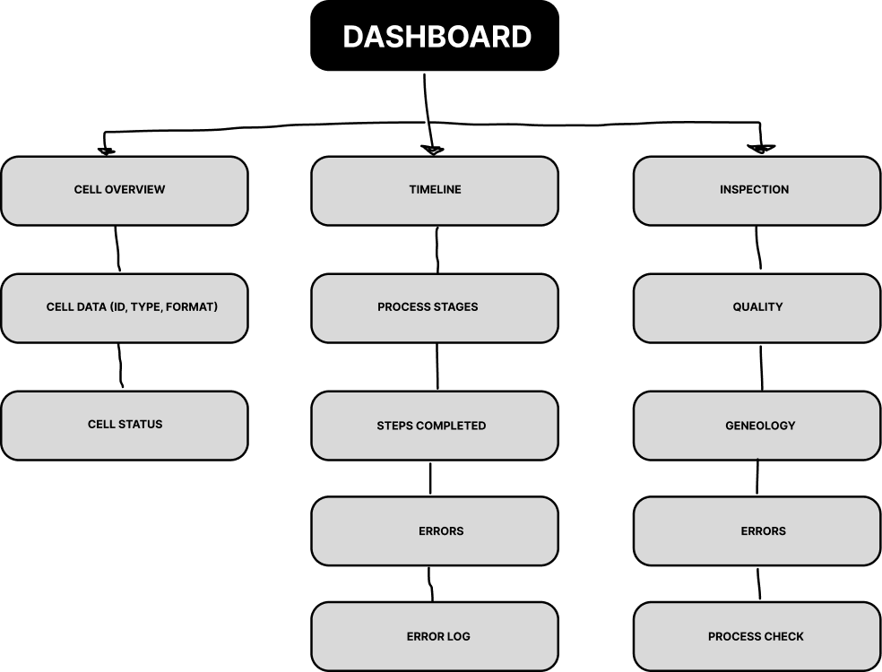
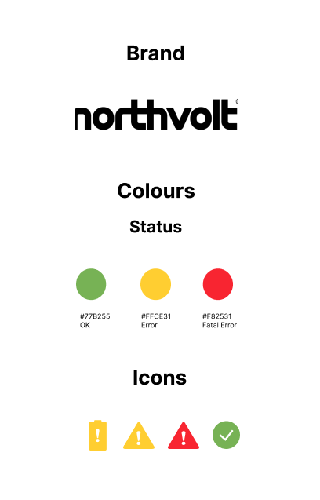
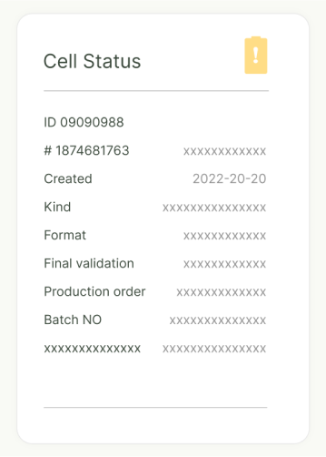
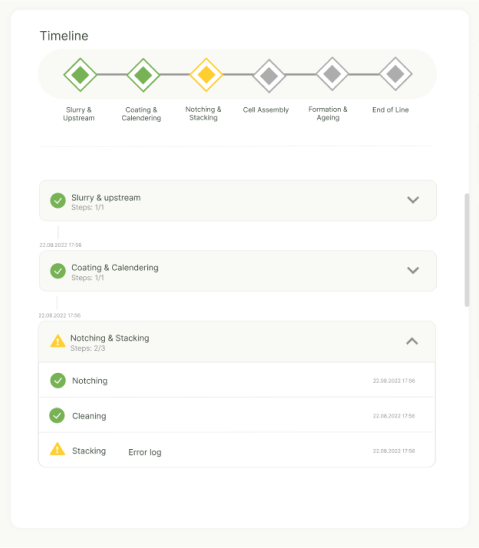

The leading company in the energy storage industry Northvolt set a design challenge to create a unified home for their product information across company-wide production lines. They wanted to develop a single identity page that communicated their cell’s process status and quality data.
In the scope of Industry 4.0, production processes have become more reliant on interoperability and seamless interactions between smart systems and human operators. While this enhances traceability and quality control, it also generates a significant amount of data, which in turn creates the need for systems that efficiently structure diverse data categories.
The primary objectives for the Northvolt Identity Page were to Build an identity page for Northvolt products that:
Firstly, understanding the users and their needs is crucial. information about the user groups was provided by the company and consists of the following three:
Secondly, the identity page must seamlessly integrate current status, past events, and future (all have temporal qualities) predictions related to the cell. To facilitate this without the interface becoming too cluttered with information, there was a need for robust filtering functionality that would allow users to focus on specific time ranges and categories.
Lastly, there was an open question about whether the identity page could be used to compare cells with other cells. During the research, attention was drawn to the responsibilities of Process Engineers. These users need to inspect cells to find ways to improve processes and avoid problems in the future and for that reason, a part of the solution had to focus on process comparison to address this question.
While the identity page had relevant sections for process data categories, the current layout did not utilize the given space efficiently, making some placements such as navigation to the timeline and genealogy not intuitive enough. The timeline lacked accessible navigation between stages and error-handling feedback, making it harder for users to track down and solve errors efficiently.
Based on these findings, it was important to structure the categories in an intuitive and accessible way. To better understand the structure and how categories relate to one another, I created an information architecture of the application’s contents.
To address the workers’ different needs, I decided to utilize the space at the top right corner by moving the menu and filters for important inspections there. This facilitated users’ needs as they have different tasks and areas of expertise. To make the production progress clearer, a timeline was added at the top to help users directly see (and navigate) what step the cell currently is in, the upcoming step and possible found errors.
To increase readability and make errors easier to locate on the screen, recognizable icons and colours were chosen for error handling. I also added several warning symbols to signify the severity of errors in specific process steps.
On the identity page, a card was added with the main information for the cell overview. This overview is needed for all user groups to determine the category of the cell. 
The timeline shows information about the current status, future, and past of the cell. All passed steps are marked with either a completed icon or an error. In case of an error, the user can check the error log.
Inspections are part of the interface that users can use to customize the view. Depending on their needs, users can view errors, genealogy, process checks, quality of the cell, and timeline. For example, the Error card shows what went wrong during a passed stage and could be used by a process engineer without the need to go through the timeline. A process check is needed to compare the production of one cell to others to identify problems in production.
Since users can customize the view of the application with Inspection settings, the order of the cards (Errors, Timeline, Process check, etc.) could be different.
The premise of this case study was to provide a web and mobile interface design for keeping track of the production processes of cells at Northvolt. This resulted in the current prototype, where the focus is on understanding, categorising, and structuring different data streams in an intuitive and accessible way for different types of users at the company. All this without compromising the application’s readability.
The next step in this design process could be to continue with usability testing based on application interactions. This could be done through a task-based test, where participants (in this case, workers at Northvolt) would be asked to complete a set of tasks and think aloud, while the facilitator (researcher) would observe their interactions. The test could therefore be concluded with an interview, highlighting the participant’s feedback towards the new design.
An alternative way of user testing would be to design a workshop where participants gather to discuss the system and possible system improvements.